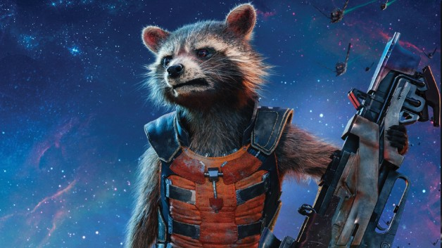

<!DOCTYPE html>
<html lang="en">

<head>
    <meta name="Avengers Rocket page" content="HTML boiler">
    <meta name="lidu">
    <meta charset="UTF-8">
    <meta http-equiv="X-UA-Compatible" content="IE=edge">
    <meta name="viewport" content="width=device-width, initial-scale=1.0">
    <link rel="stylesheet" href="avenger.css"></link>
    <title>Avengers: ROCKET</title>
</head>

<body>
    <div class="content-without-footer">
        <header>
            <ul>
                <li>Home</li>
                <li>About</li>
                <li>Login</li>
            </ul>
        </header>
        <div class="middle">
            <div class="name">
                <span class="stroke-text">ROCKET RACOON</span>
            </div>
            <div class="photo02">
                
            </div>
            <div class="textblock">
                Rocket Raccoon is a genetically and cybernetically enhanced raccoon turned freelance mercenary turned member of the Guardians of the Galaxy. He is considered to have one of the best tactical minds in the galaxy. He hails from Halfworld in the Keystone
                Quadrant where scientist were able to turn animals into sentient beings. Alongside his friend and partner Groot, he travels the galaxy picking up bounties.
            </div>
        </div>
    </div>
    <footer>
        <ul>
            <li>Get more details:</li>
            <li><a href="https://en.wikipedia.org/wiki/Rocket_Raccoon">on Wikipedia</a></li>
            <li><a href="https://www.marvel.com/characters/rocket">on Marvel site</a></li>
        </ul>
    </footer>
</body>

</html>